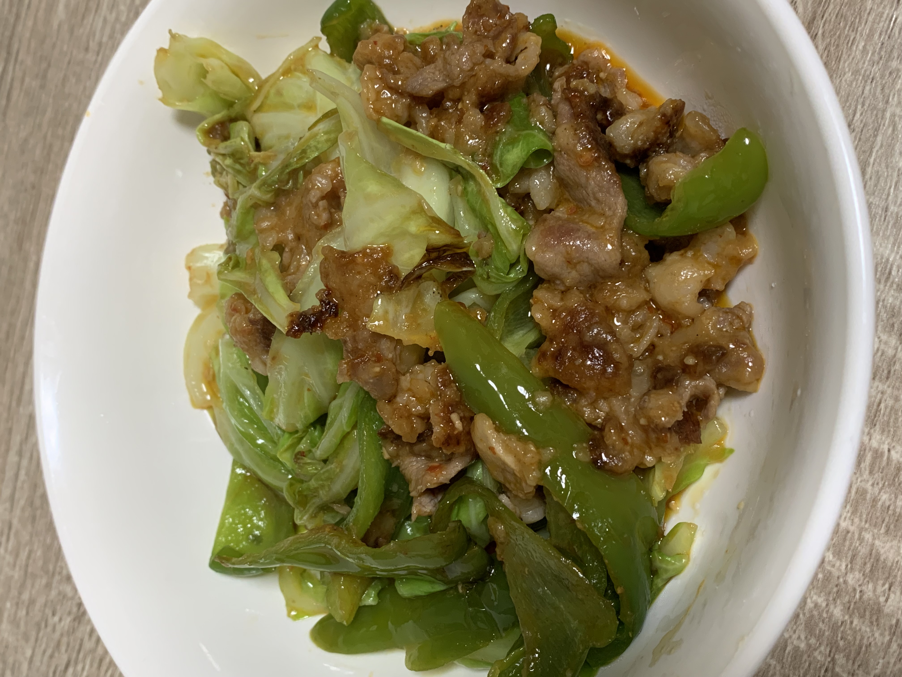
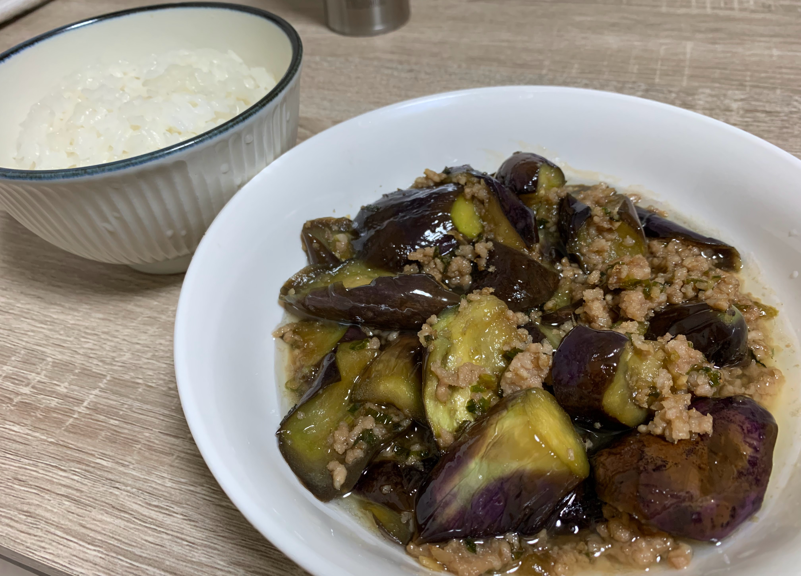
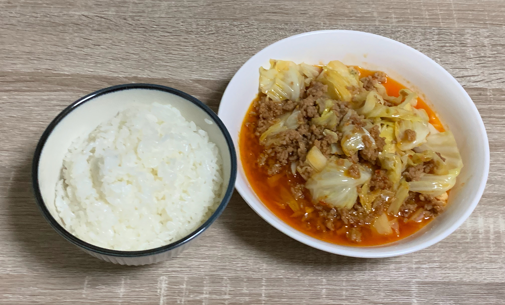
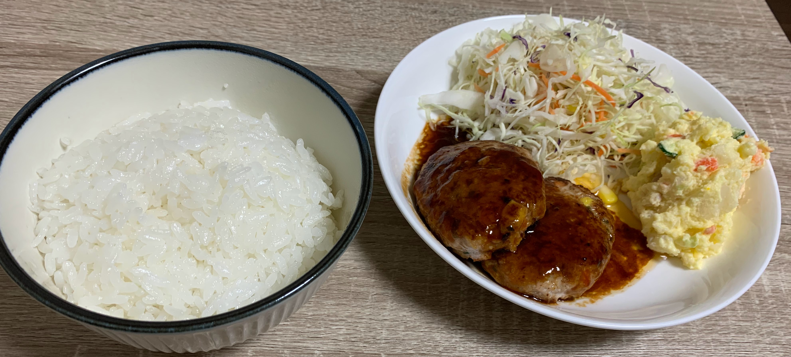
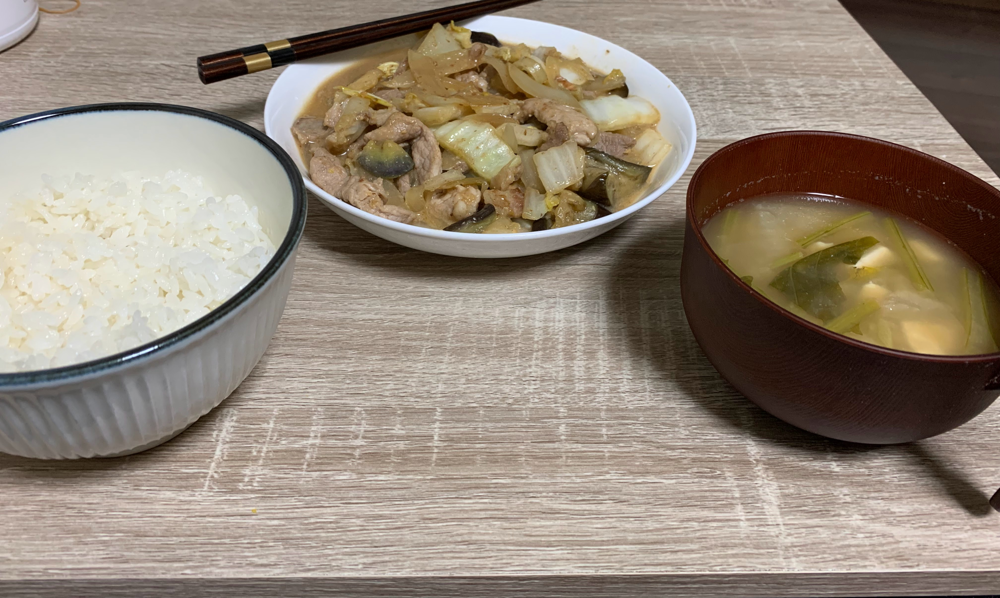
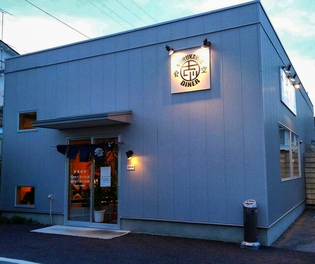
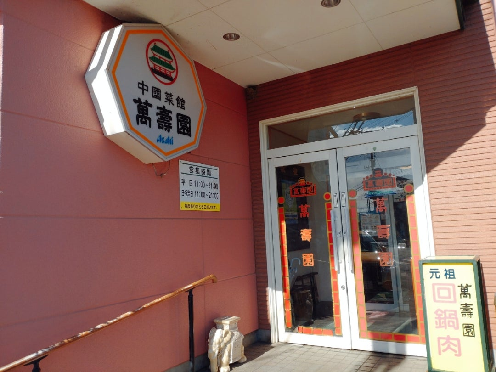
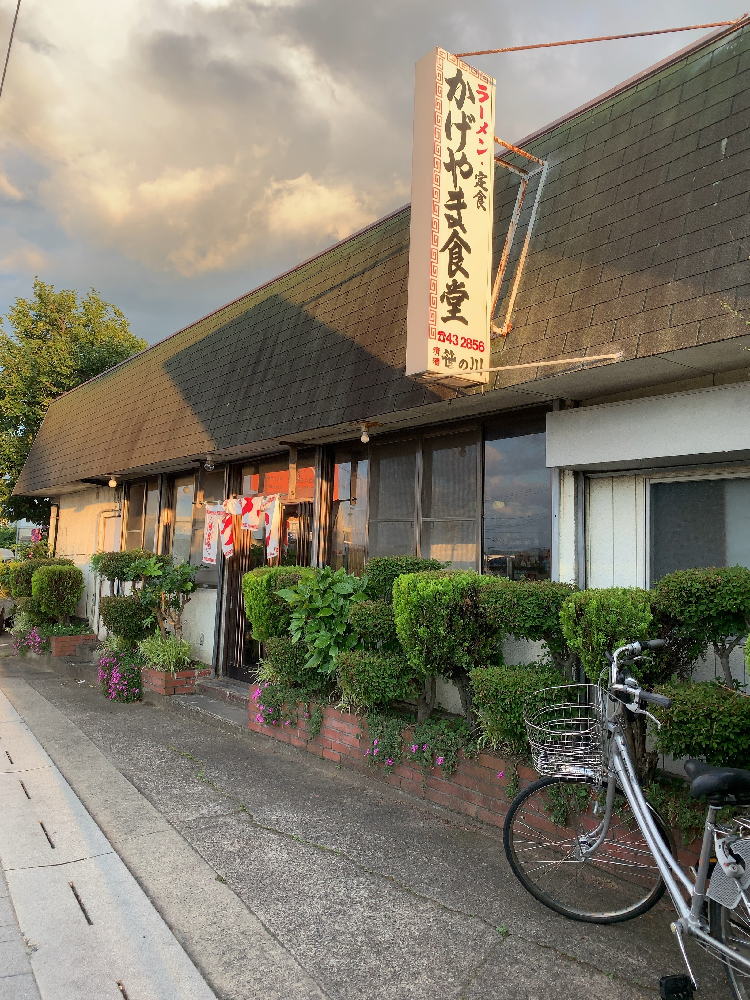

-料理編-
大学で一人暮らしする学生に必然的に起こる問題...そう、自炊です。
かくいう私も例外ではなく一人暮らしなので自炊が求められました。
はじめこそ自分で料理するなど失敗したときの不安でしかありませんでした。
ですがネットのレシピやいわゆる我が家の味を再現する内に自信がついていき、
趣味になるまで昇華したのです！
将来一人暮らしするならキッチンまわりは重視したいです！
下にスライドすれば、料理の写真や味の感想を載せています。
まだ自慢できる程ではない初心者の料理ですがどうぞ見ていってください。
他にも、ひとり暮らししている人・そうでない人向けでも私の住まい付近にある
おいしい定食屋さんも紹介していきます。
目次
- お料理
- ふんわり食感回鍋肉
- ナスとひき肉の甘醤油炒め
- キャベツと挽き肉の豆板醬炒め
- ミックスベジタブル入りデミグラスハンバーグ
- ちかくのおいしい定食屋一覧
- フルカワ食堂３
- 万寿園
- かげやま食堂
お料理
１品目：回鍋肉
・感想
ふわっとした食感にするため小麦粉を下味をつけたお肉い少量入れたら柔らかくなった。回鍋肉のもとを使わずに調理したので自分の好みの味付けができたのがgood。
お野菜とお肉を別々に炒めたおかげでそれぞれの食感の良さが引き出せていた。
２品目：ナスとひき肉の甘醬油炒め
・感想
ナスのあく抜きをしたので臭みを感じることなく食べることができた。水分がなくなるまで炒めたので旨味の凝縮ができた。
甘すぎないよう砂糖を大さじ１だけにしたので丁度よい味付けになった。
３品目：キャベツと挽き肉の豆板醬炒め
・感想
キャベツ自体をごま油で炒めたので下味をつけたような味わいにあった。挽き肉は餃子用のものを使ったので油を入れる必要がなかった。
辛くしたかったので豆板醬を気持ち多めに入れた。辛かった。
４品目：ミックスベジタブル入りデミグラスハンバーグ
・感想
ハンバーグを主菜にしたのにそなえつけのポテトサラダが一番手間がかかった。デミグラスソースはネットの記事を参考に作ったので次は独自の隠し味を入れたい。
挽き肉の臭みを消すためのナツメグが挽き肉ににほんのり果実の香りをつけられた。
５品目：キャベツと豚肉の味噌マヨ煮込み
・感想
「味噌とマヨネーズって相性いいのでは？」と思ってできたもの。他にもオイスターソースや砂糖、お酢をいれてアレンジしてみたらすごくおいしかった（語彙力）。
反省点はキャベツが煮込みすぎてちょっとふにゃふにゃになったこと。
定食屋さん
１店目：フルカワ食堂３
・紹介
郡山市昭和２丁目（イオンタウンの近く）にある定食屋さん。ボリュームで勝負してくる！中でも有名な「ハーフ＆ハーフ定食」（９９０円）は好みの組み合わせのおかずが選べるので人気！
２０１８年オープンで店内もオシャレな雰囲気なのでどの年齢層でもいきやすい！
詳細URL（引用：「食ベログ」より）➡こちら
２店目：萬寿園
・紹介
日大工学部から徒歩５分以内にある本格中華料理店。知らない人あんまりいなさそう。ここの回鍋肉定食（８５０円）は具材が大きく食欲そそる特製ダレが絡んでおり筆者のお気に入り。
ご飯が1杯無料で多めなのでたくさん食べたい人も満足！
詳細URL（引用：「食ベログ」より）➡こちら
３店目：かげやま食堂
・紹介
少しわかりにくい場所にあるが、日大工学部から徒歩１０分以内で行ける昭和レトロ感じる大衆食堂。老夫婦が経営しておりこじんまりしたが落ち着く雰囲気となっている。まさに実家のような安心感。
周辺の食堂の中でもかなり安い価格帯に関わらずおいしいので最高ですね。訪問時筆者はカツ丼（６００円）を注文。
詳細URL（引用：「食ベログ」より）➡こちら